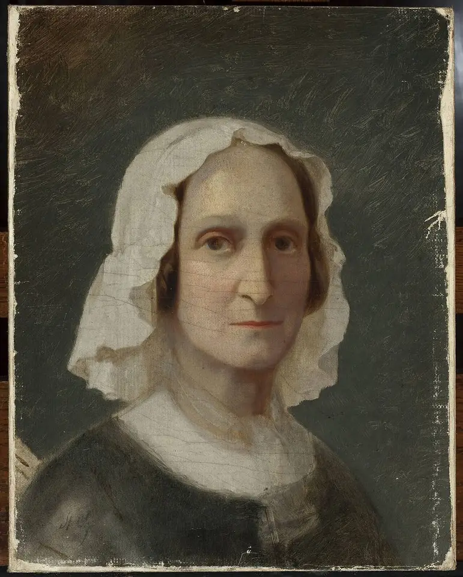
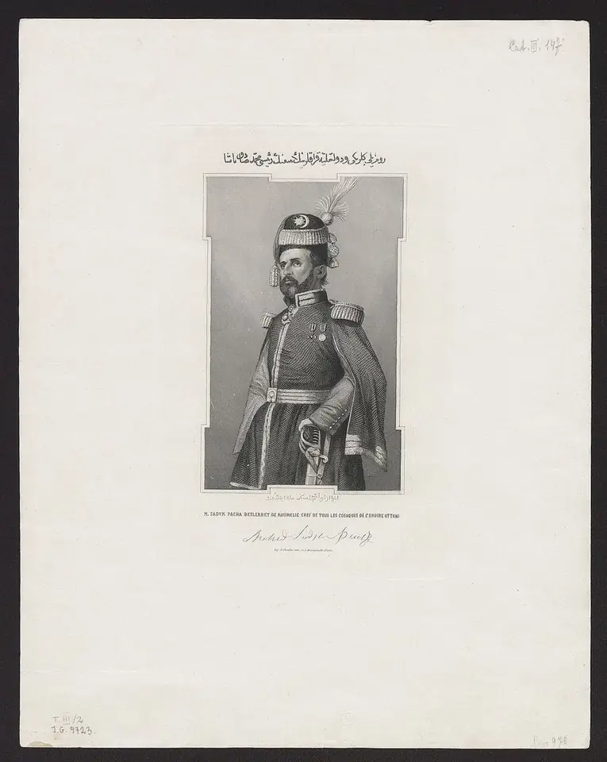

Polacy na służbie sułtana
Cihangir – dom Sadyka Paszy i Ludwiki Śniadeckiej
W tych uliczkach mieszkał polski powieściopisarz, który został paszą, zmarła pierwsza miłość Słowackiego, a nadworny malarz sułtana miał pracownię.

,_wife_of_Micha%C5%82_Sadyk_Pasha_-_MP_1063_MNW_-_National_Museum_in_Warsaw.jpg){kind=link}
- Dzielnica
- Beyoğlu
- Okres
- 1861–1876
- Zwiedzanie
- Do obejrzenia z zewnątrz
Historia
W Cihangirze lat 60. XIX w. mieszkały niemal po sąsiedzku postacie jak z powieści: polski pisarz w randze paszy, pierwsza miłość Juliusza Słowackiego i nadworny malarz sułtana.
Michał Czajkowski, autor powieści kozackich i weteran powstania listopadowego, przybył do Stambułu w 1841 r. jako agent księcia Adama Jerzego Czartoryskiego z paryskiego Hotelu Lambert. Rok później założył Adampol, dzisiejsze Polonezköy. By uniknąć wydalenia, którego domagała się Rosja, na przełomie 1849 i 1850 r. przyjął obywatelstwo osmańskie i islam, a jako Mehmed Sadyk Pasza od 1853 r. dowodził pułkiem kozaków sułtańskich, z wieloma polskimi oficerami. Z dokumentów osmańskich wynika, że w latach 60. XIX wieku miał dom w Cihangirze.
Jego towarzyszka życia Ludwika Śniadecka była córką wileńskiego uczonego Jędrzeja Śniadeckiego; w młodości kochał się w niej Juliusz Słowacki. Zmarła w Cihangirze 22 lutego 1866 r. i spoczęła w Adampolu, gdzie jej grób jest do dziś. Jej portret z 1864 r., przechowywany w Muzeum Narodowym w Warszawie, namalował Stanisław Chlebowski – malarz, któremu według części badaczy drogę do pałacu sułtana otworzył właśnie Sadyk Pasza. Chlebowski do września 1871 r. miał pracownię przy Sıraselviler, potem wynajął dom przy pobliskiej Ağa Hamamı Sokağı, gdzie mieszkał i malował.
Polacy w służbie sułtana nie byli wyjątkiem. Po upadku powstania węgierskiego w 1849 r. islam i osmański mundur przyjęli m.in. generał Józef Bem (Murad Pasza) i Konstanty Borzęcki (Mustafa Celaleddin Pasza), autor wydanej w Stambule książki o dawnych i współczesnych Turkach, a zarazem pradziadek poety Nâzıma Hikmeta. Czajkowski w 1872 r. wyjechał do Rosji, gdzie zmarł w 1886 r. Żadnego z cihangirskich domów nie zidentyfikowano – pinezka wskazuje ulicę, nie budynek.

.jpg){kind=link}


Jak zwiedzać
To spacer, nie zwiedzanie: domy z tamtych lat nie są oznaczone. Zejdź z placu Taksim ulicą Sıraselviler, skręć w pobliską Ağa Hamamı Sokağı i idź dalej uliczkami Cihangiru w dół, aż do meczetu Cihangir. Z jego tarasu widać Bosfor i brzeg azjatycki – gdzieś dalej na północ, za wzgórzami Beykozu, leży Adampol, w którym pochowano Ludwikę. To dzielnica mieszkalna: zachowaj ciszę i nie fotografuj ludzi w oknach i bramach.
Postaci
- Michał Czajkowski (Mehmed Sadyk Pasza)
- Ludwika Śniadecka
- Stanisław Chlebowski
- Juliusz Słowacki
- Józef Bem (Murad Pasza)
- Konstanty Borzęcki (Mustafa Celaleddin Pasza)
Położenie
Beyoğlu, Stambuł · Współrzędne: 41.03256, 28.98230
Położenie na mapie jest przybliżone.